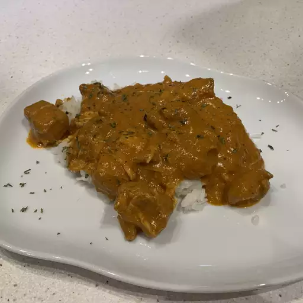

Slow-Cooker Butter Chicken

Description
Butter chicken is one of my favorite Indian dishes. It's easy to prep for the slow cooker in the morning to come home to the wonderful aroma of warm Indian spices... I love it! Serve with basmati rice and warm naan bread.
Recipe by The Meal Planner Updated on November 28, 2022
Ingredients
- 2 tablespoons butter
- 2 tablespoons vegetable oil
- 4 large skinless, boneless chicken thighs, cut into bite-sized pieces
- 1 onion, diced
- 3 cloves garlic, minced
- 1 (6 ounce) can tomato paste
- 1 tablespoon curry paste
- 2 teaspoons curry powder
- 2 teaspoons tandoori masala
- 1 teaspoon garam masala
- 15 green cardamom pods
- 1 (14 ounce) can coconut milk
- 1 cup low-fat plain yogurt
- salt to taste